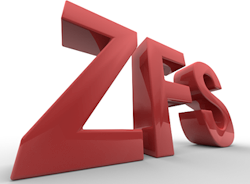

ZFS Rules!
I downloaded the latest Solaris build from OpenSolaris.org -
Nevada
build B27 - when you boot it, it calls itself Solaris 11. I
have to admit that I hadn't been paying as much attention to the
ZFS filesystem as I should have. I finally read through
the
slides and some of the other
documentation, and I really got jazzed. In past lives I
have been a Unix SysAdmin, and fussing with filesystems was the #1
pain in the ass (remember ncheck, dcheck and fsdb?). I couldn't
believe that ZFS could be as easy and powerful as the documentation
said it was, so yesterday I scrounged up a couple of extra drives,
slapped them in my
Opteron box, and took it out for a spin.
Wow. It
is that easy. Putting together a raid array is truly a
one-liner. Try the experiment yourself. I spent way more
time plugging in the SATA drives than I did in turning them into a
RAIDZ array. It's got one cool feature after another,
but if I had to pick a favorite, it would be the ability to
atomically, at low cost, and transaction-aware, create a file
system snapshot. Between being an interesting way to do versioning
and backups of live systems, it's just way too cool for words. Hats
off to
Jeff Bonwick and the rest of the ZFS team.